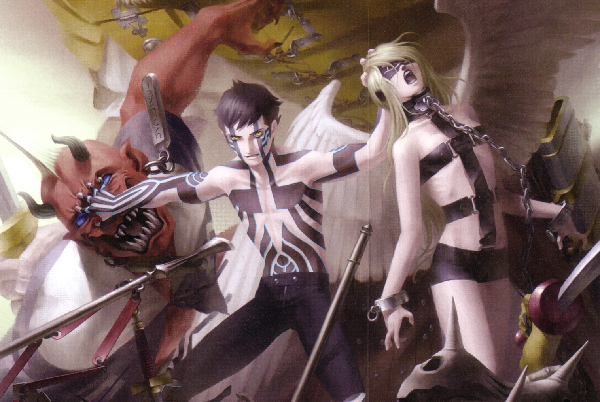

Shin Megami Tensei: Nocturne
Shin Megami Tensei: Nocturne (No original em japonês: 真・女神転生III-NOCTURNE, também chamado de Shin Megami Tensei III: Nocturne), é o terceiro jogo na série de RPG eletrônico Shin Megami Tensei, e foi lançado para Playstation 2. O jogo se passa em um mundo pós-apocalíptico, infestado de demônios, e o jogador controla um personagem meio-demônio que deve tomar parte na concepção de um novo mundo.
- O inimigo de ontem é o aliado de hoje! Negocie com mais de 100 diferentes demônios para que se juntem ao seu grupo! Alguns demônios podem evoluir ao avançarem de nível e você pode fundir 2 demônios diferentes para criar um novo demônio mais poderoso!
- Customize seu personagem com Magatama, parasitas que dão ao hospedeiro poderes demôniacos!
- Dependendo das escolhas que você fizer, você seguirá uma das diversas ideologias do qual determinará o destino do mundo inteiro.
- Convidado especial: Dante, de Devil May Cry. Será ele seu mais temível inimigo ou seu maior aliado?
- Mais de 50 horas de Gameplay!
